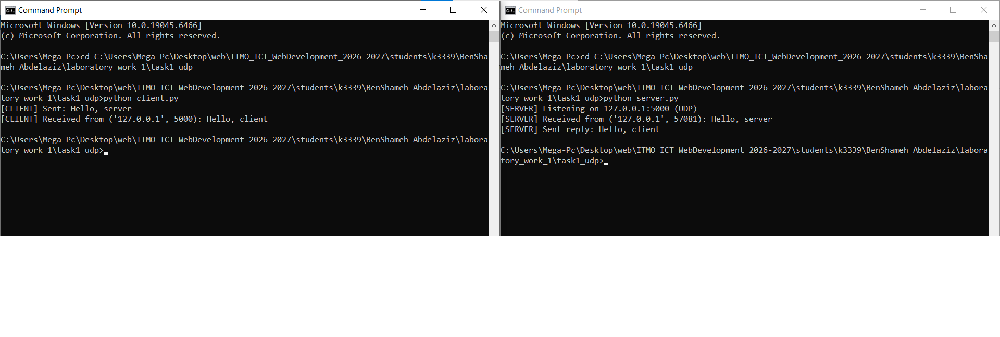
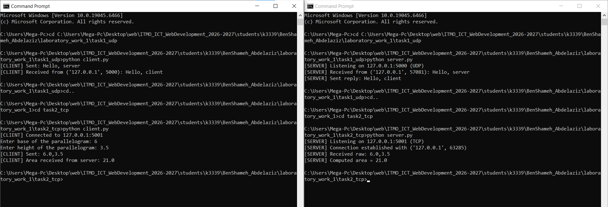
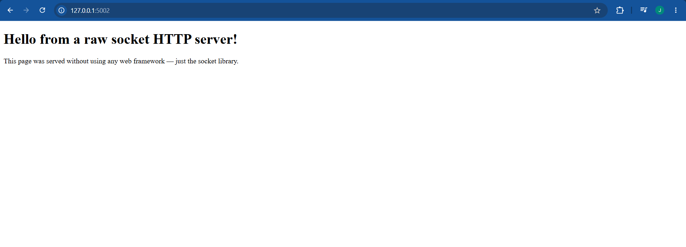
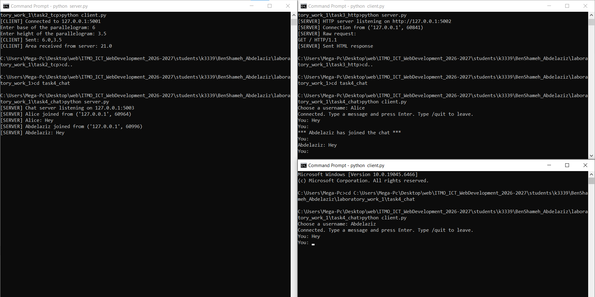
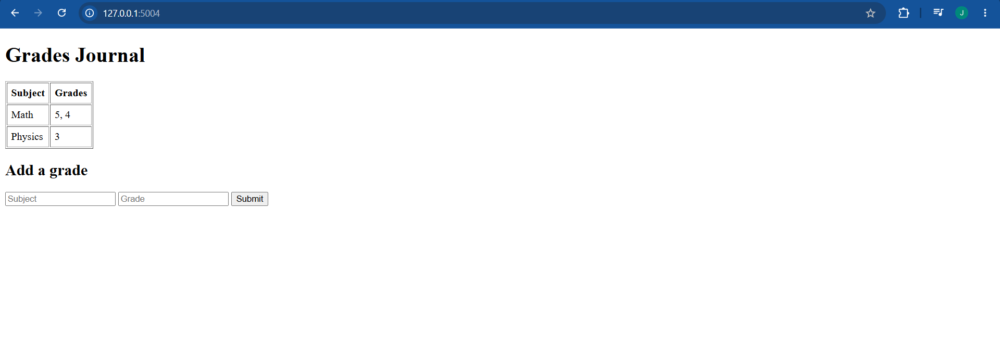

ЛР1 — Работа с сокетами
Практическое задание 1. Обмен сообщениями по UDP
Протокол: UDP (socket.SOCK_DGRAM) — протокол без установления соединения. Клиент отправляет датаграмму методом sendto(), указывая адрес получателя при каждой отправке. Сервер принимает данные методом recvfrom(), который также возвращает адрес отправителя, необходимый для ответа.
Сервер (server.py)
import socket
HOST = "127.0.0.1"
PORT = 5000
def main():
server_socket = socket.socket(socket.AF_INET, socket.SOCK_DGRAM)
server_socket.bind((HOST, PORT))
print(f"[SERVER] Listening on {HOST}:{PORT} (UDP)")
data, client_address = server_socket.recvfrom(1024)
message = data.decode()
print(f"[SERVER] Received from {client_address}: {message}")
reply = "Hello, client"
server_socket.sendto(reply.encode(), client_address)
print(f"[SERVER] Sent reply: {reply}")
server_socket.close()
if __name__ == "__main__":
main()
Клиент (client.py)
import socket
SERVER_HOST = "127.0.0.1"
SERVER_PORT = 5000
def main():
client_socket = socket.socket(socket.AF_INET, socket.SOCK_DGRAM)
message = "Hello, server"
client_socket.sendto(message.encode(), (SERVER_HOST, SERVER_PORT))
print(f"[CLIENT] Sent: {message}")
data, server_address = client_socket.recvfrom(1024)
print(f"[CLIENT] Received from {server_address}: {data.decode()}")
client_socket.close()
if __name__ == "__main__":
main()
Пример работы в терминале
[SERVER] Listening on 127.0.0.1:5000 (UDP)
[SERVER] Received from ('127.0.0.1', 58717): Hello, server
[SERVER] Sent reply: Hello, client
[CLIENT] Sent: Hello, server
[CLIENT] Received from ('127.0.0.1', 5000): Hello, client

Практическое задание 2. Вычисления через TCP (Вариант 4 — площадь параллелограмма)
Протокол: TCP (socket.SOCK_STREAM) — протокол с установлением соединения. Перед обменом данными клиент выполняет connect(), а сервер — accept(), после чего гарантируется доставка и порядок байт.
Формула: площадь параллелограмма = основание × высота.
Сервер (server.py)
import socket
HOST = "127.0.0.1"
PORT = 5001
def compute_parallelogram_area(base: float, height: float) -> float:
return base * height
def main():
server_socket = socket.socket(socket.AF_INET, socket.SOCK_STREAM)
server_socket.setsockopt(socket.SOL_SOCKET, socket.SO_REUSEADDR, 1)
server_socket.bind((HOST, PORT))
server_socket.listen(1)
print(f"[SERVER] Listening on {HOST}:{PORT} (TCP)")
conn, addr = server_socket.accept()
print(f"[SERVER] Connection established with {addr}")
with conn:
data = conn.recv(1024).decode()
base_str, height_str = data.split(",")
base, height = float(base_str), float(height_str)
area = compute_parallelogram_area(base, height)
print(f"[SERVER] Computed area = {area}")
conn.sendall(str(area).encode())
server_socket.close()
if __name__ == "__main__":
main()
Клиент (client.py)
import socket
SERVER_HOST = "127.0.0.1"
SERVER_PORT = 5001
def main():
client_socket = socket.socket(socket.AF_INET, socket.SOCK_STREAM)
client_socket.connect((SERVER_HOST, SERVER_PORT))
base = float(input("Enter base of the parallelogram: "))
height = float(input("Enter height of the parallelogram: "))
message = f"{base},{height}"
client_socket.sendall(message.encode())
data = client_socket.recv(1024).decode()
print(f"[CLIENT] Area received from server: {data}")
client_socket.close()
if __name__ == "__main__":
main()
Пример работы в терминале
Ввод: основание = 6, высота = 3.5
[SERVER] Listening on 127.0.0.1:5001 (TCP)
[SERVER] Connection established with ('127.0.0.1', 44488)
[SERVER] Received raw: 6.0,3.5
[SERVER] Computed area = 21.0
[CLIENT] Connected to 127.0.0.1:5001
Enter base of the parallelogram: 6
Enter height of the parallelogram: 3.5
[CLIENT] Area received from server: 21.0

Практическое задание 3. Раздача HTML-страницы по HTTP
Протокол: HTTP поверх TCP. HTTP-ответ — это обычный текст в строгом формате: строка статуса, заголовки, пустая строка и тело. Сервер читает index.html, вычисляет Content-Length и отправляет один пакет через тот же сокет, что принял подключение.
Сервер (server.py)
import socket
import os
HOST = "127.0.0.1"
PORT = 5002
HTML_FILE = os.path.join(os.path.dirname(__file__), "index.html")
def build_http_response(body: str) -> bytes:
body_bytes = body.encode("utf-8")
headers = (
"HTTP/1.1 200 OK\r\n"
"Content-Type: text/html; charset=utf-8\r\n"
f"Content-Length: {len(body_bytes)}\r\n"
"Connection: close\r\n"
"\r\n"
)
return headers.encode("utf-8") + body_bytes
def main():
server_socket = socket.socket(socket.AF_INET, socket.SOCK_STREAM)
server_socket.setsockopt(socket.SOL_SOCKET, socket.SO_REUSEADDR, 1)
server_socket.bind((HOST, PORT))
server_socket.listen(1)
print(f"[SERVER] HTTP server listening on http://{HOST}:{PORT}")
with open(HTML_FILE, "r", encoding="utf-8") as f:
html_content = f.read()
conn, addr = server_socket.accept()
with conn:
request = conn.recv(4096).decode(errors="ignore")
response = build_http_response(html_content)
conn.sendall(response)
server_socket.close()
if __name__ == "__main__":
main()
Пример работы (запрос через curl / браузер)
$ curl http://127.0.0.1:5002/
<!DOCTYPE html>
<html lang="en">
<head>
<meta charset="UTF-8">
<title>Sockets Lab</title>
</head>
<body>
<h1>Hello from a raw socket HTTP server!</h1>
<p>This page was served without using any web framework — just the socket library.</p>
</body>
</html>

Практическое задание 4. Многопользовательский чат (TCP + threading)
Реализация: многопользовательский чат по протоколу TCP с использованием библиотеки threading — на 100% баллов.
Архитектура: сервер хранит словарь {username: socket} активных клиентов, защищённый threading.Lock. Для каждого подключившегося клиента запускается отдельный поток (handle_client), который блокируется на conn.recv() независимо от остальных — это позволяет серверу обслуживать нескольких пользователей одновременно. При получении сообщения от одного клиента сервер рассылает его всем остальным (broadcast). Клиент выходит из чата командой /quit.
На стороне клиента также используется поток: один поток слушает входящие сообщения (listen_for_messages), а главный поток обрабатывает ввод пользователя — иначе клиент не смог бы одновременно печатать и получать сообщения.
Клиент реализован одним файлом client.py; несколько пользователей независимо запускают его в разных терминалах — личность пользователя не жёстко закодирована в файле, а вводится при запуске (input("Choose a username: ")).
Сервер (server.py)
import socket
import threading
HOST = "127.0.0.1"
PORT = 5003
clients = {}
clients_lock = threading.Lock()
def broadcast(message: str, exclude_username: str = None):
with clients_lock:
for username, conn in list(clients.items()):
if username == exclude_username:
continue
try:
conn.sendall(message.encode())
except OSError:
pass
def handle_client(conn: socket.socket, addr):
username = None
try:
username = conn.recv(1024).decode().strip()
with clients_lock:
clients[username] = conn
broadcast(f"*** {username} has joined the chat ***", exclude_username=username)
while True:
data = conn.recv(1024)
if not data:
break
text = data.decode().strip()
if text == "/quit":
break
broadcast(f"{username}: {text}", exclude_username=username)
except (ConnectionResetError, OSError):
pass
finally:
if username:
with clients_lock:
clients.pop(username, None)
broadcast(f"*** {username} has left the chat ***", exclude_username=username)
conn.close()
def main():
server_socket = socket.socket(socket.AF_INET, socket.SOCK_STREAM)
server_socket.setsockopt(socket.SOL_SOCKET, socket.SO_REUSEADDR, 1)
server_socket.bind((HOST, PORT))
server_socket.listen()
print(f"[SERVER] Chat server listening on {HOST}:{PORT}")
while True:
conn, addr = server_socket.accept()
thread = threading.Thread(target=handle_client, args=(conn, addr), daemon=True)
thread.start()
if __name__ == "__main__":
main()
Клиент (client.py)
import socket
import threading
SERVER_HOST = "127.0.0.1"
SERVER_PORT = 5003
def listen_for_messages(sock: socket.socket):
while True:
try:
data = sock.recv(1024)
except OSError:
break
if not data:
print("\n[CLIENT] Disconnected from server.")
break
print(f"\n{data.decode()}\nYou: ", end="", flush=True)
def main():
client_socket = socket.socket(socket.AF_INET, socket.SOCK_STREAM)
client_socket.connect((SERVER_HOST, SERVER_PORT))
username = input("Choose a username: ").strip()
client_socket.sendall(username.encode())
receiver = threading.Thread(target=listen_for_messages, args=(client_socket,), daemon=True)
receiver.start()
print("Connected. Type a message and press Enter. Type /quit to leave.")
while True:
text = input("You: ")
client_socket.sendall(text.encode())
if text.strip() == "/quit":
break
client_socket.close()
if __name__ == "__main__":
main()
Пример работы (проверено двумя одновременными подключениями)
Alice sees: *** Abdelaziz has joined the chat ***
Abdelaziz receives: Alice: Hey
Alice receives: Abdelaziz: Hey
[SERVER] Chat server listening on 127.0.0.1:5003
[SERVER] Alice joined from ('127.0.0.1', 60964)
[SERVER] Alice: Hey
[SERVER] Abdelaziz joined from ('127.0.0.1', 60996)
[SERVER] Abdelaziz: Hey
[SERVER] Alice left
[SERVER] Abdelaziz left

Практическое задание 5. Простой веб-сервер (GET/POST)
Протокол: HTTP поверх TCP, реализован вручную (без http.server). Сервер разбирает первую строку запроса, чтобы определить метод (GET/POST) и путь, а для POST дополнительно читает тело запроса после заголовков.
Структура данных: словарь {subject: [grade, grade, ...]} — оценки группируются по дисциплине. При повторной отправке оценки по уже существующему предмету она добавляется в список этого предмета, а не создаёт новую строку.
Сервер (server.py)
import socket
from urllib.parse import parse_qs
HOST = "127.0.0.1"
PORT = 5004
grades = {}
def render_page() -> str:
rows = ""
for subject, grade_list in grades.items():
rows += f"<tr><td>{subject}</td><td>{', '.join(str(g) for g in grade_list)}</td></tr>\n"
return f"""<!DOCTYPE html>
<html lang="en">
<head><meta charset="UTF-8"><title>Grades Journal</title></head>
<body>
<h1>Grades Journal</h1>
<table border="1" cellpadding="6">
<tr><th>Subject</th><th>Grades</th></tr>
{rows if rows else '<tr><td colspan="2">No grades yet</td></tr>'}
</table>
<h2>Add a grade</h2>
<form method="POST" action="/">
<input type="text" name="subject" placeholder="Subject" required>
<input type="number" name="grade" placeholder="Grade" required>
<button type="submit">Submit</button>
</form>
</body>
</html>"""
def build_response(status_line: str, body: str) -> bytes:
body_bytes = body.encode("utf-8")
headers = (
f"{status_line}\r\n"
"Content-Type: text/html; charset=utf-8\r\n"
f"Content-Length: {len(body_bytes)}\r\n"
"Connection: close\r\n"
"\r\n"
)
return headers.encode("utf-8") + body_bytes
def handle_request(request_text: str) -> bytes:
lines = request_text.split("\r\n")
method, path, _ = lines[0].split(" ")
if method == "GET":
return build_response("HTTP/1.1 200 OK", render_page())
elif method == "POST":
header_part, _, body = request_text.partition("\r\n\r\n")
fields = parse_qs(body)
subject = fields.get("subject", [""])[0].strip()
grade = fields.get("grade", [""])[0].strip()
if subject and grade:
grades.setdefault(subject, []).append(grade)
return build_response("HTTP/1.1 200 OK", render_page())
else:
return build_response("HTTP/1.1 405 Method Not Allowed", "<h1>405 Method Not Allowed</h1>")
def main():
server_socket = socket.socket(socket.AF_INET, socket.SOCK_STREAM)
server_socket.setsockopt(socket.SOL_SOCKET, socket.SO_REUSEADDR, 1)
server_socket.bind((HOST, PORT))
server_socket.listen()
print(f"[SERVER] Grades web server listening on http://{HOST}:{PORT}")
while True:
conn, addr = server_socket.accept()
with conn:
request = conn.recv(8192).decode(errors="ignore")
if not request:
continue
response = handle_request(request)
conn.sendall(response)
if __name__ == "__main__":
main()
Пример работы
Отправлено: Math=5, Math=4, Physics=3 (POST), затем GET /:
[SERVER] Grades web server listening on http://127.0.0.1:5004
[SERVER] Added grade 5 for Math. Journal: {'Math': ['5']}
[SERVER] Added grade 4 for Math. Journal: {'Math': ['5', '4']}
[SERVER] Added grade 3 for Physics. Journal: {'Math': ['5', '4'], 'Physics': ['3']}
Итоговая страница:
| Subject | Grades |
|---|---|
| Math | 5, 4 |
| Physics | 3 |

Вывод
В ходе лабораторной работы были реализованы 5 клиент-серверных приложений на библиотеке socket: обмен сообщениями по UDP, вычисление площади параллелограмма по TCP, раздача HTML-страницы по HTTP, многопользовательский чат с использованием threading, и простой веб-сервер для учёта оценок с ручным разбором GET/POST-запросов. Все задания протестированы и работают корректно.